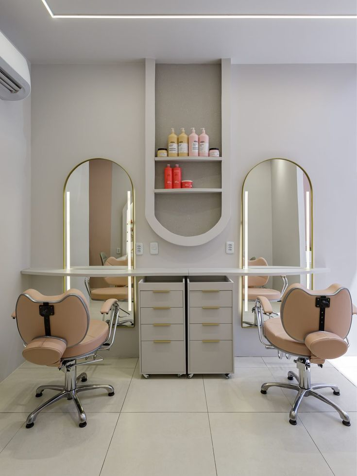

Onde o cuidado encontra a sofisticação.
Manicure, depiladora, design de sobrancelhas a 15 anos. Sou apaixonada pelo que faço.

Nossos Serviços
Arte e Precisão em cada detalhe

PREMIUM CHOICE
Alongamento em Gel
Durabilidade extrema com acabamento natural e delicado.
Esmaltação Premium
Cores vibrantes e brilho espelhado de longa duração.

spa
Spa dos Pés
Relaxamento profundo e hidratação intensa.
palette
Nail Art Customizada
Design exclusivo feito à mão para você.
sanitizer
Materiais Esterilizados
Protocolo rigoroso de higienização e esterilização em autoclave para sua total segurança.
schedule
Atendimento com Hora Marcada
Respeito absoluto ao seu tempo com pontualidade e dedicação exclusiva em cada sessão.
verified
Produtos de Alta Qualidade
Utilizamos apenas as melhores marcas do mercado internacional para garantir resultados duradouros.
Portfólio
Galeria de Inspiração
Pronta para viver essa experiência?
Reserve seu momento de autocuidado em poucos cliques.
Atendemos de Terça a Sexta, das 09h às 19h.